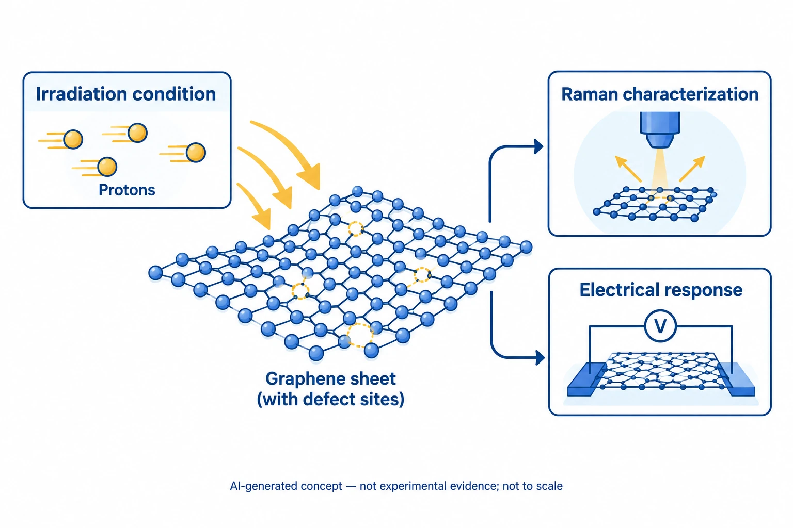

Overview
This study by researchers at Yonsei University and the Korea Aerospace Research Institute, co-authored by Jungmok Seo (then at the School of Electrical and Electronic Engineering, Yonsei University), who now leads the BLISS Lab at Yonsei University, compared defects in graphene transistors irradiated with 5, 10 and 15 MeV protons at a fixed fluence of 2 × 10^14 cm^-2. Raman spectra indicated vacancy-type defects after 5 and 10 MeV irradiation, with I_D/I_D' of 8 to 9, whereas 15 MeV protons produced mainly sp3-type defect signals and a flat region at the Dirac point.
Background
Electronics used in outer space and low earth orbit suffer atomic displacements from cosmic rays, which consist mostly of energetic protons. Graphene has a small lattice constant, a displacement threshold energy (Td) of 18 to 22 eV and a thickness of 0.34 nm, which make it a candidate channel material for radiation-hard devices. The few earlier reports on graphene under MeV proton irradiation had not examined how the proton energy changes the damage, although this dependence is needed to understand degradation mechanisms.
Design and approach
Graphene grown by chemical vapor deposition on Cu foil was transferred onto 300 nm SiO2/Si and patterned into field-effect transistors with Ti/Au contacts and 10 μm channels. Protons accelerated to 20 MeV in the MC-50 cyclotron at the Korea Institute of Radiological and Medical Sciences were slowed to the target energies with aluminum degraders, so that only the proton energy differed between samples at the same total fluence.

This AI-generated, not-to-scale concept diagram connects proton irradiation, graphene defects, and Raman and electrical analysis. The lattice, defect and instrument symbols do not reproduce atomic structures, an optical setup, two-terminal wiring or measurements.
Generated for this library to illustrate the design; it is not a figure from the paper and does not show measured data.
How it was evaluated
Raman spectra (532 nm, normalized to the G peak) and transistor transfer curves were compared before and after irradiation, with all measurements taken 5 days after exposure. The energy transferred to the target was estimated from the stopping power of protons in graphite, calculated with the Bethe formula using NIST PSTAR corrections, and from stopping and range of ions in matter (SRIM) Monte Carlo simulations.
Key results
Before irradiation, the negligible D peak (1341 cm^-1) and strong 2D peak indicated high-quality monolayer graphene. After 5 and 10 MeV irradiation, the D peak, the D + G peak (2934 cm^-1) and the Dτ peak (1620 cm^-1) increased, and I_D/I_D' of 8 to 9 indicated that most defects were vacancies. The 15 MeV sample showed no significant increase in these peaks, whereas a D'' peak (1130 cm^-1), associated with sp3-type defects, appeared in all irradiated samples, and the 2D intensity decreased in every sample.
In the transistors, 5 and 10 MeV irradiation shifted the Dirac point, which the authors suggest may be due to charge buildup in SiO2, with a larger shift at 5 MeV, and lowered the current at the Dirac point by approximately 21%. The 15 MeV sample showed a decrease in current and a Dirac point shift that produced a flat region at the Dirac point, a change that appeared only at this energy.
The calculated stopping powers of 5, 10 and 15 MeV protons in graphite were 1.20, 0.72 and 0.50 eV/Å, and the simulated penetration depths were about 178, 605 and 1237 μm, so lower-energy protons transfer more energy near the surface. A cited simulation predicts roughly 15 to 20 eV of transferred energy for 5 to 15 MeV protons, at the boundary of Td, and the authors state that their experimental results place the threshold proton energy for vacancy-type defects between 10 and 15 MeV.
Open questions
The authors state that the exact origin of the flattening at the Dirac point after 15 MeV irradiation is not fully understood and relate it to sp3-type defects by comparison with the Raman results. They also note that the low intensity of the D'' peak cannot be compared directly with the other peaks, because visible Raman spectroscopy is 50 to 230 times more sensitive to sp2 sites than to sp3 sites.
Related research
Mega-electron-volt proton irradiation on supported and suspended graphene: A Raman spectroscopic layer dependent study
The related paper varied the support and layer number of graphene under MeV proton irradiation, whereas the present study varied the proton energy at a fixed fluence on SiO2-supported monolayer graphene.
Abstract-based introductionRESEARCH NEWS
Research in the news
Sources used in this summary
This summary is based on the publisher PDF of the article, including the figure legends; the Abstract calls the 2 × 10^14 cm^-2 value a dose rate, while the main text describes it as a fixed fluence.